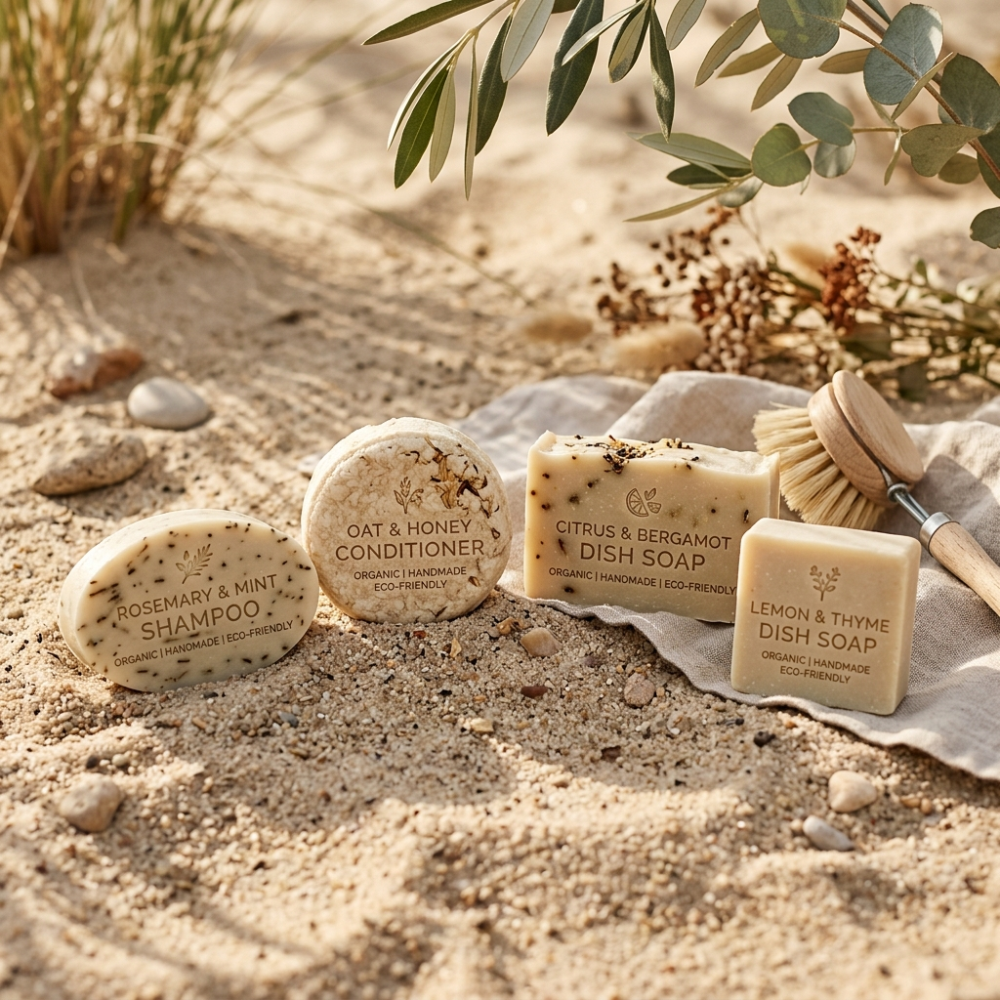
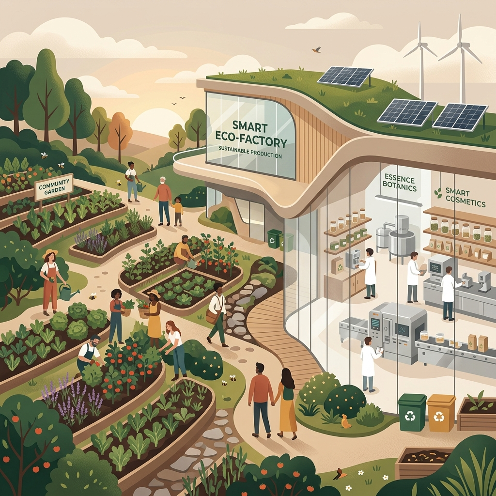
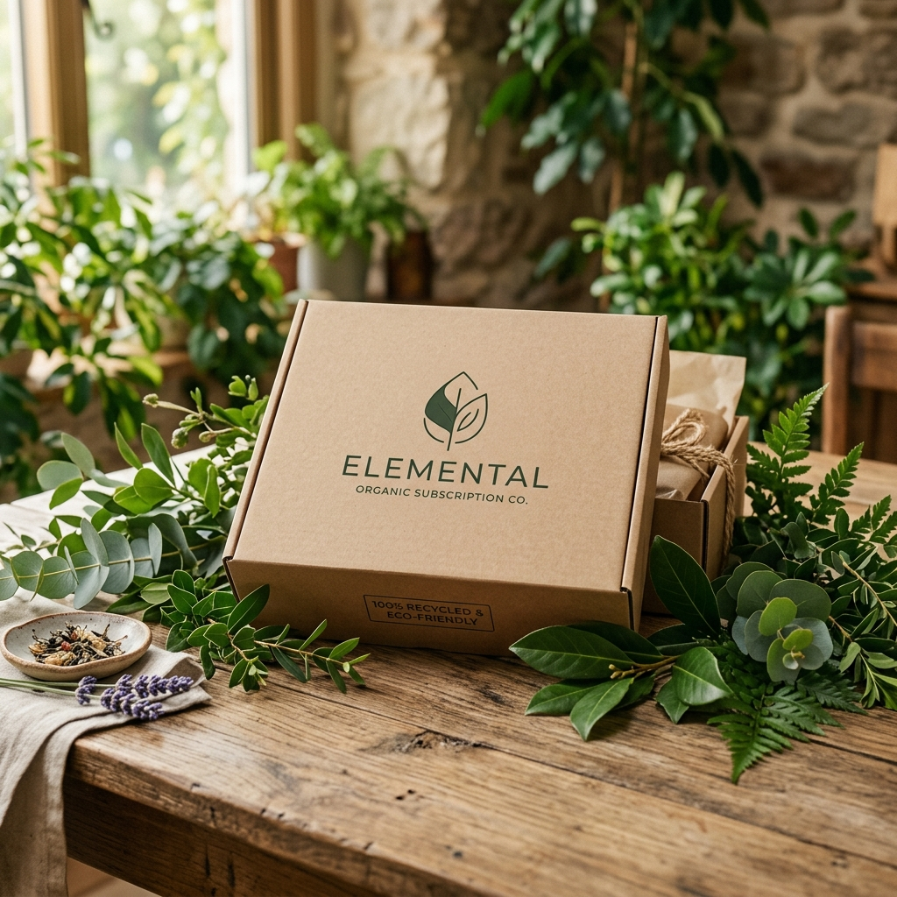

동구밭의 B2C 스케일업 전략
디지털마케팅 전문가 과정 3조
김교진 · 김진영 · 박현숙 · 서상진 · 신희진 · 이영현
동구밭은 왜 '착한 비누'로만 설명되면 부족한가?
"우리는 단순히 사회적기업 미담을 나누지 않습니다.
철저한 제품력과 소비자의 재구매 비즈니스 구조를 기반으로 브랜드 전략을 분석합니다."


발달장애인 도시농부
겨울철 고용유지 한계
사계절 생산 체제
제조 기반 모델 전환
연매출 170억 돌파
대기업 OEM/ODM 및 B2C
환절기마다 가렵고 예민해지는 두피 트러블. 온갖 케어 샴푸를 전전하다 "성분이 가장 순하고 자극 없는 고체 샴푸바"를 선택합니다.
일반 식기세제 세척 후 남아있을지 모르는 잔여 세제에 대한 만성 불안. 그릇부터 야채, 아기 젖병까지 안심 세척 가능한 "1종 세제 고체바"를 탐색합니다.
욕실과 싱크대를 가득 채우는 크고 알록달록한 플라스틱 용기에 대한 피로감. 공간을 정돈하고 쓰레기를 없애는 "플라스틱 프리 고체 세정제"에 반응합니다.
"품질은 진입 장벽을 낮추고,
가치는 이탈 장벽을 높인다."
가려운 두피 개선, 식기 세제 불안 해소, 뛰어난 세정력 체험
매일 쓰는 일상 경험이 축적되며 자발적 재구매 발생
패키지의 점자, 제로웨이스트 실천, 발달장애인 고용 발견
동구밭 샴푸바는 친환경이라서가 아니라, 두피와 사용감 문제를 철저히 설계했기 때문에 계속 판매됩니다.
지성과 건성 두피 맞춤형 저자극 허브 성분 설계로 두피 가려움과 붉은 기 진정
'고체형은 거품이 안 날 것'이라는 편견을 부수는 고기능성 롤링 크림 발포 기술
물에 쉽게 무르지 않도록 제작되어 작지만 기존 액상 제품보다 오래 쓰는 실용성
식기는 기본, 야채와 과일, 신생아 젖병까지 잔여 세제 걱정 없이 다목적 정화 세척
자연 유래 보습 성분 함유로 고무장갑 없이 사용해도 손 피부 땅김 및 건조 자극 최소화
알록달록하고 지저분한 액체 펌프통을 걷어내고, 깔끔하고 미니멀한 주방 환경 선사
내 그릇과 가족의 몸에 닿기 때문에, 동구밭 설거지바는 생활용품의 가장 확실한 안심 기준을 제시합니다.
동구밭의 소셜 임팩트는 '착한 마음'에 의존하지 않고, 제품 품질에 감동한 고객들의 '반복 구매' 루프 위에서 성장합니다.
174억 원대
120 ~ 140명
루프의 원동력
습관 형성
선순환 동력
가꿈지기 고용
가치 락인
동구밭은 매출 성장이 가꿈지기 사원의 추가 채용으로 이어집니다. 매출 박스권 정체는 소셜 벤처로서 중대한 병목이었습니다.
연 130억 원대 초반 박스권에 갇히며 제조 임가공(B2B OEM) 비중의 구조적 한계 노출
대기업 OEM 위주 수주 구조로 인한 납품 단가 인하 압박 및 낮은 영업이익률
제조업으로서의 기술적 인지도는 1위이나 일반 고객 접점(D2C)의 핵심 브랜드 파워 인지 부족
호텔 객실의 샴푸 어메니티, 유명 공유 오피스 세면대의 고체비누, 트렌디 카페의 주방 설거지바
광고 비용을 들이지 않고 고객이 일상 동선 내에서 직접 손끝으로 써보며 브랜드를 강렬하게 체감
B2B 비품 납품은 거래의 끝이 아닙니다. B2C 고객을 획득하기 위한 가장 오가닉한 무상의 '체험 채널'로 재정의됩니다.
호텔, 리조트, 오피스 세면대에 단정하게 비치된 동구밭 제품이 자연스러운 광고판 역할 수행
사용자가 세정 헹굼감, 두피 촉촉함, 향을 직접 몸으로 체감하며 동구밭 브랜드의 신뢰 형성
좋은 기억을 바탕으로 검색 및 공식 자사몰로 유입, 구독 및 재구매의 'Tactile Loop' 작동
| 구분 | Current: B2B OEM / 제조 중심 | Future: B2C 라이프스타일 브랜드 |
|---|---|---|
| 핵심 고객 | 대기업 OEM 구매 담당자 및 기관 바이어 | 제품을 생활 속에서 직접 체험한 개인 구독자 |
| 수익성 구조 | 단가 하락 압박, 마진율 하락 (Low Margin) | 자사 플랫폼 직접 판매(D2C)로 손익 개선 (High Margin) |
| 마케팅 방식 | B2B 단체 납품 영업 위주 | B2B2C 경험 유입으로 획득 비용 최소화 (Low CAC) |
| 기업 해자 (Moat) | 고체 비누 제조 공장 설비 역량 | B2B2C 결합 순환 구조 및 철학 지향의 충성 팬덤 |
CAMPAIGN TITLE
기간: 2026년 7월 1일 ~ 9월 30일 (Q3)
슬로건: "호텔과 오피스에서 경험한 기분 좋은 일상, 이제 당신의 집에서 구독하세요."

매월 정기 구독 결제 완료액의 20%를 즉시 마일리지로 누적 환원
초기 결제 장벽 완화를 위한 무이자 카드 할부 지원 및 조건별 전액 무료 배송
SNS 사용후기 공유 시 직전 구매 금액의 +5% 마일리지 추가 적립 혜택
자사몰에서 현금처럼 바로 결제
발달장애인 일터 지원 기부금 전환
두피 클리닉 서비스 이용권 구매
품질이 소비자의 생활 문제를 해결한다
제품 만족 속에 숨은 선한 가치를 느낀다
B2C 스케일업으로 임팩트를 영속한다
"B2B의 검증된 경험이 B2C의 단단한 충성도로 이어질 때, 동구밭의 새로운 10년의 선순환이 완성됩니다."